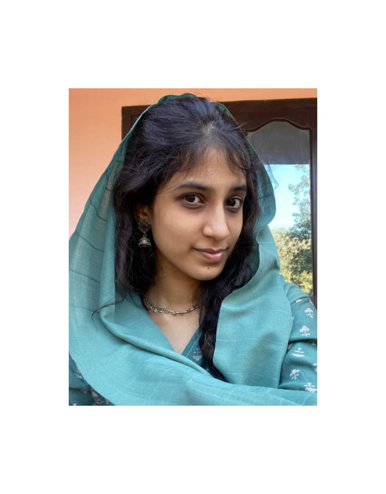

My Resume

Summary:-
A 3 rd year cse student an enthusisatic web developer.Keen to provide te max dedication to my work,hardworking, and a good listener
Education
I am a 3rd year cse student at Ukf College of Engineering Kollam.Am 2022-26 batch.I have completed my higher studies at Mar Baselios Senior Secondary School Pooyapally 2022 pass out.
I am planning to take Honors on python development.
Work experience
Not yet had an oppurtunity to do a job since am a student.Would like to look forward to it in future.
Skills
These are some of the things am good at
- Good communication skill
- Fluent at English,Hindi and my native language malayalam
- Good decision-making skills
- Good datastructure and algorithms
- focusing on learning javascript
For more enquiries
Hobbies